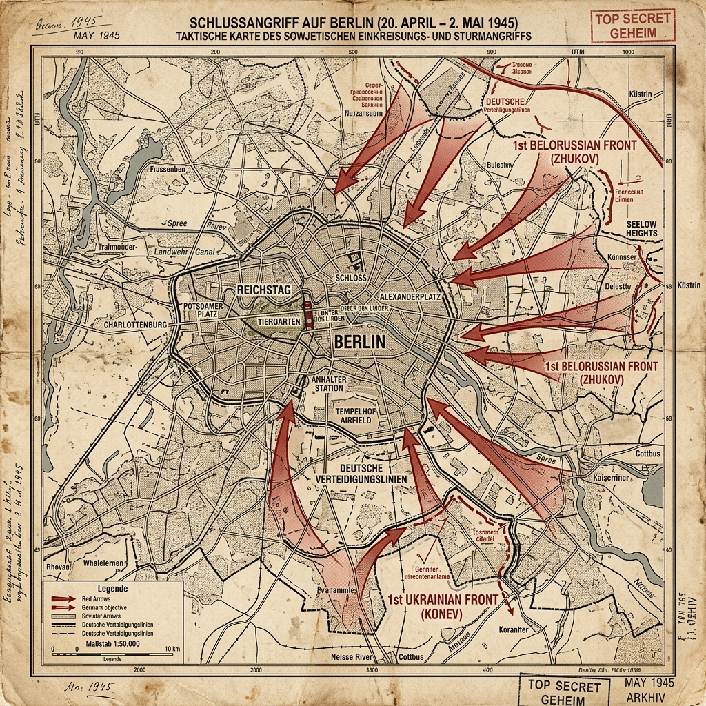

Strategic Context & The Race for the Capital
By the spring of 1945, the Third Reich was collapsing. The Red Army had reached the Oder River, roughly 40 miles from Berlin. Western Allied armies had crossed the Rhine, but Supreme Commander Dwight D. Eisenhower ordered a halt on the Elbe River rather than a race for Berlin. That decision reflected Yalta-era occupation zones already agreed in outline, the high casualties expected in a street fight for the capital, and competing operational priorities—not simple indifference to the city's symbolism.
Soviet Premier Joseph Stalin was determined to capture the German capital before the Western Allies could reach it. Stalin wanted to secure German industrial assets, nuclear research facilities, and the ultimate symbolic prize of the Reichstag. He created a competition between his top marshals, Georgy Zhukov (1st Belorussian Front) and Ivan Konev (1st Ukrainian Front), ordering them to race each other to capture Berlin.
Military Doctrines: Urban Siege
The Soviet doctrine relied on overwhelming fire power. They massed the greatest concentration of artillery in history on the Oder front, designed to pulverize the German defenses. Once inside the city, they organized into small, heavily armed assault groups, supported by tanks and self-propelled guns, to clear buildings and streets.
The German defense was disorganized and desperate. General Helmuth Weidling, commander of the Berlin Defense Area, divided the city into sectors, but lacked the men and weapons to hold them. The defenders relied on Panzerfaust anti-tank launchers to ambush Soviet tanks in the narrow streets, while using the city's subway tunnels to move troops and bypass Soviet patrols.
Weapons, Technology, and Logistics
The Soviet forces deployed the IS-2 heavy tank and the Katyusha rocket launcher, which fired salvos of rockets that devastated defensive positions. The T-34/85 tank remained the workhorse, though many were fitted with wire-mesh screens to detonate German Panzerfaust rounds before they struck the armor.
The German defenders had limited ammunition and fuel. Many units were equipped with captured weapons and lack basic supplies. The Volkssturm (civilian militia consisting of old men and boys) were armed with outdated rifles and Panzerfausts, lacking uniforms, training, and communication radios.
Opening Moves: The Seelow Heights
The Soviet offensive began on April 16, 1945, with a massive artillery bombardment along the Oder River. Zhukov attacked the Seelow Heights, the key defensive position guarding the route to Berlin. The German 9th Army, commanded by Gotthard Heinrici, had withdrawn from their front lines, avoiding the initial bombardment.
Zhukov faced difficulties on the heights, with German artillery and mud slowing the advance. Zhukov turned on searchlights to blind the defenders, but this backlit his own infantry, making them easy targets. Konev, in the south, advanced rapidly, crossing the Neisse River and forcing Stalin to allow Konev's tanks to pivot north and race Zhukov to the capital.
The Siege: Entering the City
By April 25, 1945, the Soviet fronts had met west of Berlin, completely encircling the capital. The Red Army began its advance into the city suburbs, encountering barricades, flooded canals, and fanatical resistance from SS units, including foreign volunteers (such as the French Charlemagne Division) who had nothing to lose.
The combat devolved into street-by-street fighting. Soviet tanks, moving without infantry support, suffered heavy losses to Panzerfausts fired from basement windows. The Red Army adapted, using artillery to destroy buildings before the infantry entered, and using flamethrowers and grenades to clear the ruins.
The Battle for the Reichstag
The climax of the battle centered on the Reichstag building—the symbolic parliament of Germany. On April 28, Soviet troops reached the Königsplatz. The Reichstag was fortified by the Germans, who bricked up windows and dug anti-tank ditches, turning it into a fortress.
On April 30, Soviet soldiers breached the building, initiating room-by-room combat in the pitch-black corridors. Late that night, Soviet soldiers raised the Red Flag over the roof of the Reichstag. The event was photographed by Yevgeny Khaldei, serving as the iconic image of Soviet victory in Berlin.
Hitler's End in the Führerbunker
While the battle was raging in the streets, Adolf Hitler remained in his subterranean Führerbunker beneath the Reich Chancellery. Physical declining and detached from reality, he spent his final days ordering non-existent armies to relieve Berlin, raging at his generals for 'betrayal', and writing his political testament.
On April 30, as Soviet troops advanced close to the Chancellery, Hitler committed suicide by gunshot, while his wife Eva Braun took cyanide. Their bodies were carried up to the garden and burned, as Hitler had ordered, to prevent their capture. Joseph Goebbels, appointed Reich Chancellor, committed suicide with his wife the next day after poisoning their six children.
Surrender and Tragedy
On May 2, 1945, General Helmuth Weidling met with Soviet General Vasily Chuikov and signed the surrender of the Berlin garrison. The fighting in the city stopped. German soldiers emerged from the ruins to go into captivity.
The civilian population endured catastrophe. Estimates of civilian deaths associated with the battle commonly run to about 100,000–125,000, from bombardment, hunger, suicide, and the chaos of the city's fall. The Soviet advance was also accompanied by widespread looting and mass rape—acts of revenge and breakdown of discipline that stain the military victory and remain part of the historical record of 1945 Berlin.
The Aftermath & Strategic Consequences
The Berlin garrison's surrender on 2 May was not yet Germany's national surrender. After Hitler's suicide on 30 April, Admiral Karl Dönitz briefly headed a rump government. German armed forces signed unconditional surrender documents on 7 May at Reims and in a ratified ceremony on 8–9 May in Berlin-Karlshorst—V-E Day in the West (8 May) and Victory Day in the Soviet calendar (9 May). The city was divided into four occupation sectors: Soviet, American, British, and French.
This division of Berlin, located deep inside the Soviet occupation zone of Germany, created the central flashpoint of the Cold War. It led to the Berlin Airlift of 1948-1949 and the construction of the Berlin Wall in 1961, which divided the city for nearly three decades.
Historical Legacy & Long-term Impact
The Battle of Berlin is remembered as the final victory over Nazi Germany, but also as a tragic climax of urban siege and civilian suffering. The Soviet War Memorial in Treptower Park, Berlin, serves as a major monument to the 80,000 Soviet soldiers who fell during the capture of the city.
The battle highlights the final collapse of a dictatorial regime that chose to drag its own capital and civilian population into destruction rather than accept surrender, marking the end of the European conflict.
The Axis Perspective
The defense of Berlin was characterized by absolute fanaticism, clinical delusion, and existential terror. Adolf Hitler, physically declining and detached from reality, spent his final days moving non-existent armies on a map, ordering phantom counterattacks to relieve the city, and raging at the "betrayal" of his generals. In a final act of nihilism, he issued the "Nero Decree," ordering the destruction of Germany's remaining infrastructure, believing the German people had failed him and deserved to perish. For the average German civilian and soldier, the approaching Red Army represented the ultimate nightmare, driven by a deep fear of retribution for the atrocities committed by Germany in the East. An anonymous diary of a German woman in Berlin (later published as the harrowing A Woman in Berlin) chillingly summarized the total collapse of civilization during those final weeks: "History is happening here... it smells of corpses, burning, and the end of the world." The surrender of the Berlin garrison on May 2nd was met with a mixture of profound relief that the fighting had stopped, and sheer terror at what the Soviet occupation would bring.
Tactical Map & Theater of Operations
A tactical overview of the final Soviet assault rings and defensive sectors in Berlin:

Figure: Battle of Berlin, April–May 1945: Detailing the massive Soviet pincer movements by the 1st Belorussian and 1st Ukrainian Fronts encircling the German capital.
Archives, Primary Sources & Further Reading
To read diaries, operational logs, and research files on the Battle of Berlin:
- Imperial War Museums — The Battle of Berlin IWM overview of the final Soviet offensive and the fall of Nazi Germany's capital.
- German-Russian Museum Berlin-Karlshorst Museum on the site of the 8–9 May 1945 German surrender ceremony in Berlin.
- Library of Congress — WWII collections Primary documents, maps, and photographic collections related to the end of the war in Europe.